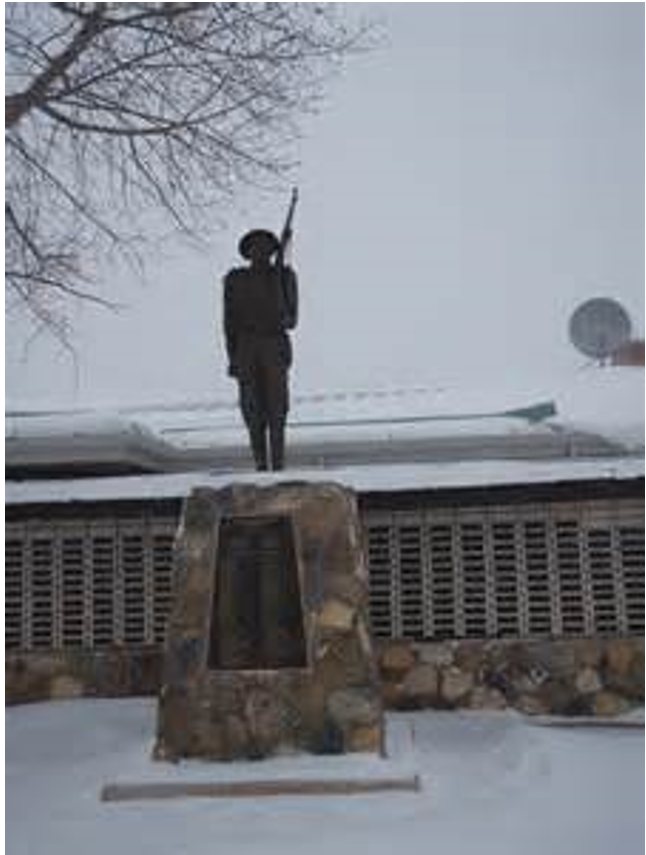
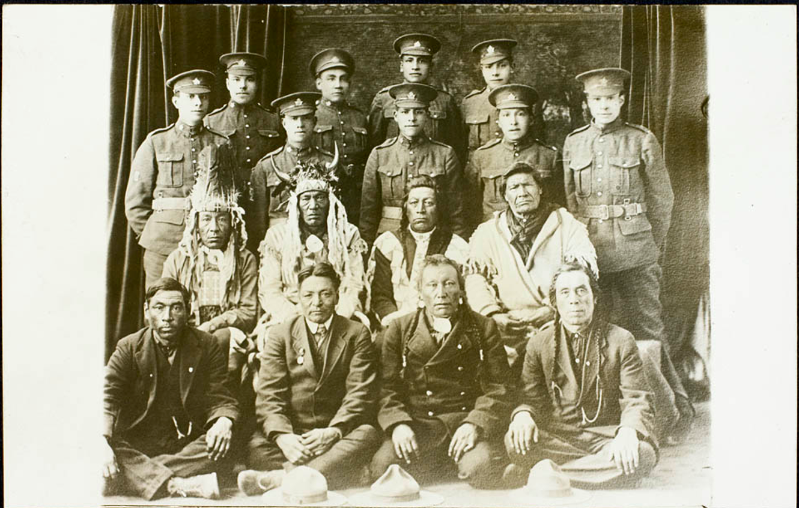

Veterans
Honouring service, sacrifice, and remembrance

Our Peepeekisis Veterans
There are over 80 war time veterans from Peepeekisis who served in World War 1, World War 2, and Korea. These veterans had Treaty rights that excluded them from fighting in foreign wars. They made a choice to volunteer to enlist despite the fact they were not Canadian citizens.
Indian people in Canada lived under apartheid with a pass system in place until 1940 and an agricultural permit system in place until 1968. These veterans grew up in the Indian residential school system, and were denied Canadian citizenship until 1960.
Peepeekisis men and women participated in World War I (1914-1918) and World War II (1939-1945), including Dieppe and the pivotal Normandy Beach landing invasion. They were also present at the Korean War of 1950-1953 and continued in many peace time efforts to serve Canada.
Their wartime contributions created positive changes in the lives of all Indian people.
The Warrior Tradition
The Peepeekisis band can be traced to the Calling River or Qu’Appelle Cree. The band was first known as the Ready the Bow Band, after its leader who signed Treaty in 1874.
In 1866, 900 lodges of Cree and Saulteaux led by Day Star, Ready Bow, and Little Black Bear repelled the Blackfoot at Red Ochre Hill near Swift Current. Reports of this battle between the Blackfeet and the Cree at Red Ochre Hills on the South Saskatchewan state that six hundred Blackfeet were slain.” (Issac Cowie, Company of Adventurers, A Narrative of Seven Years in the Service of the Hudson Bay Company, 1867-1874, 1993:313-314)
The Blackfoot had their revenge in 1871 at the Belly River in which 135 Cree died. Shortly after this battle, a treaty was made between the Blackfoot and the Cree. These stories of the tribal wars created a warrior tradition.
World War I
1914 – 1918
WWI
Indian people across the prairies were interested in the Great War but English was a basic requirement for service and it served as a barrier. The majority of Indian people from Peepeekisis spoke English because of the residential schools. Canada had imposed the Compulsory Enlistment Act of which status Indians were exempted because of their Treaty rights.
By 1919, 24 of 38 men from Peepeekisis enlisted. First Nation soldiers also served as Code Talkers during this war as their languages were used to convey important military secrets.

World War II
1939 – 1945
In 1939 when Canada entered the war effort, Peepeekisis band members again responded in huge numbers. Men enlisted with the Princess Patricia or Regina Rifles Canadian regiments. Four women enlisted as part of the Women’s Army Corp. They may have enlisted as part a family tradition, or the warrior tradition or it may have been a reflection of a shortage of farm lands available on the reserve, and also indicate a need for adventure and a paycheck. The list of casualties and death among the WW2 enlistees were high. Maurice Bellegarde was killed in action and is among the five Peepeekisis warriors that lost their lives during WW2. Donald Thomas died June 6, 1944. Maurice Keewatin died August 28, 1944. Albert McLeod died June 19, 1945. Joseph Desnomie was killed in action September 29, 1944 at the age of 19.
Korean War
1950 – 1953
The Korean war seen 10 Peepeekisis men volunteered for service in the army, air force and navy.
Peacetime
After the wars, the Soldier Settlement Act provided Canadian veterans with land and a grant to resettle them. First Nations veterans were to be granted” Certificates of Possessions” for land on their own reserve lands. Many First Nation veterans did not receive any benefits for service. Canada Indian veterans returned home to find Indian agents, the Pass and permit system, and the requirement to send their children to Indian residential schools. Indian ceremonies including Sundances, Pow-wows, were still outlawed. Indian veterans who came back with injuries could not access proper health care; nor could Indian veterans hire a lawyer or pursue a post secondary education without losing their Indian status. They were also denied the right to bank account without permission from their Indian agent. The racism had a destructive impact on the returning Indian veterans.